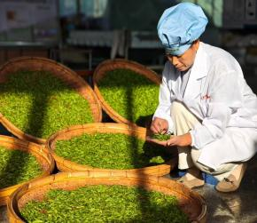
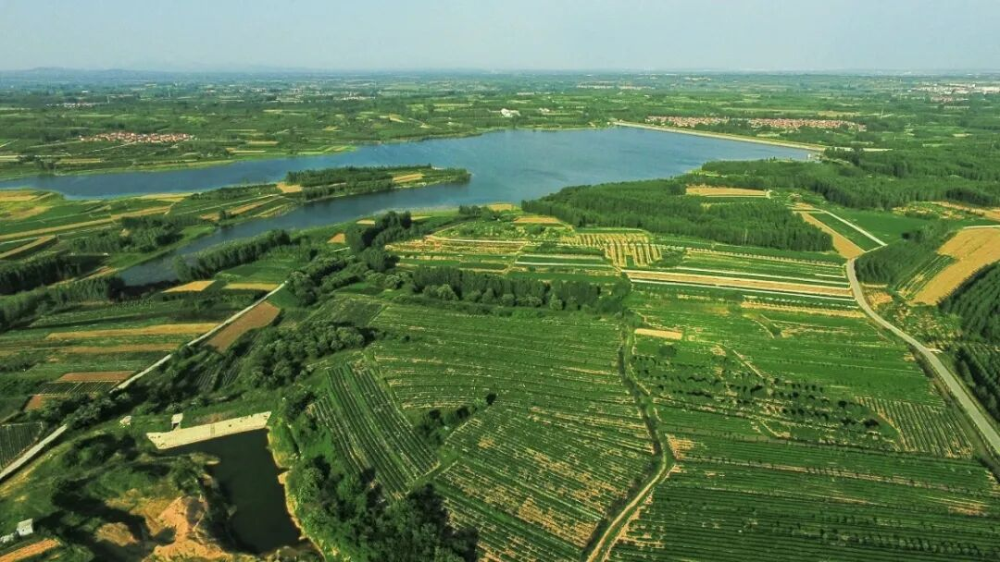

THREE FIELD SITES · HAIQING
三站茶乡，
看见三种产业答案。
海青上品让茶走进更多生活场景，乐茶用工艺和客户关系经营有限产量，华忆用生态、标准与追溯建立品牌。它们共同构成海青茶从产品到产业的三个切面。
本页根据公众号记录、参访录音和整理稿编写。面积、产量等数字均标注“据受访方介绍”；海青上品按茶文化空间和实践点呈现，不擅自定义为生产型茶厂。
海青上品
让一片茶，
进入更多生活场景。

原叶、抹茶食品、茶具与礼盒
用新媒体连接产地与消费者
原乡守根、归乡兴业、新乡创新
抹茶馒头与茶味花饽饽
海青上品茶文化空间是团队理解茶产业延展的重要窗口。
阅读相关实践纪实展厅里，原叶茶之外还有抹茶食品、茶具、礼盒与IP周边；直播间把产地故事直接讲给消费者；相邻的乡创空间又把原乡人守茶、归乡人创业、新乡人做电商与深加工的经历连接起来。团队还走进面食工坊，记录海青抹茶小馒头和茶味花饽饽的制作过程。
这里让我们看到，乡村产业升级并不只是多卖几盒茶，而是把茶香延伸到食品、设计、体验和传播中，让本土资源进入年轻人的日常生活，也让种植、加工、销售与乡村文化形成更长的价值链。
乐茶
用“数据炒茶”，
稳定一杯豌豆香。

拥有或管理的茶园面积
通常年产量
判断原料后动态调整参数
海青绿茶与便捷杯茶
机械化不是替代经验，而是把经验变成可以记录、调整和复盘的工艺。
乐茶负责人早年因工作接触茶叶采购，走访南方产区并开设门店。2018年前后，电商让消费者能够直接找到产地，她由销售端转向上游，在海青建厂并持续摸索制茶技术。受访方介绍，乐茶拥有或管理约200多亩茶园，年产量通常为2至3吨，因此不适合依靠低价直播无限放量，而更重视中高端品质、礼赠场景和熟客复购。
其核心方法是“数据炒茶”：制茶人先判断芽叶嫩度、含水状态与天气，再调整杀青温度、时间、投叶量、压力和速度，让机器执行并记录参数。由此形成的豌豆鲜香、扁形茶和便捷杯茶，也成为乐茶区别于普通通货的主要识别点。
TEAM OBSERVATION返回目录 ↑有限产量不一定是弱点。当企业不能和大产区拼最低价格时，真实产地、稳定工艺与长期客户关系，反而构成更清晰的经营选择。
华忆茶业
让生态、标准与品牌，
彼此证明。

自有管理茶园基础
为机械作业预留的行距
按时间、嫩度与产品方向采制
展示产地、批次与产品信息
“虫咬茶”不是人为放虫或神秘工艺，而是把茶园允许自然生态存在的管理方式坦率地写进品牌。
阅读相关实践纪实烟台大学校友李桂村于2015年返乡创业，逐步建设约293亩茶园。华忆在建园时把茶行间距放宽到约1.8米，为松土、施肥、运输和修剪设备预留通道，以应对农村劳动力减少。茶园强调减少化学投入、保留果树草本和有益生物，并在经历虫害压力后逐渐形成相对稳定的生态平衡。
生产端按一年中的采摘时段和芽叶嫩度划分8个采制标准，再以“人判断、机器执行、数据复盘”稳定不同批次。创办人的设计背景也进入包装：手绘地域图案、缩减过度包装、一物一码和线上内容共同说明茶从哪里来、何时采、怎样做。华忆的价值不在单一卖点，而在茶园、工艺、追溯和品牌能够互相印证。
保留果树、草本和生物栖息空间
人判断原料，机器执行，数据复盘
产品差异建立在真实采摘标准上
包装、一物一码和线上内容共同说明来源